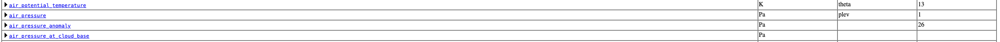
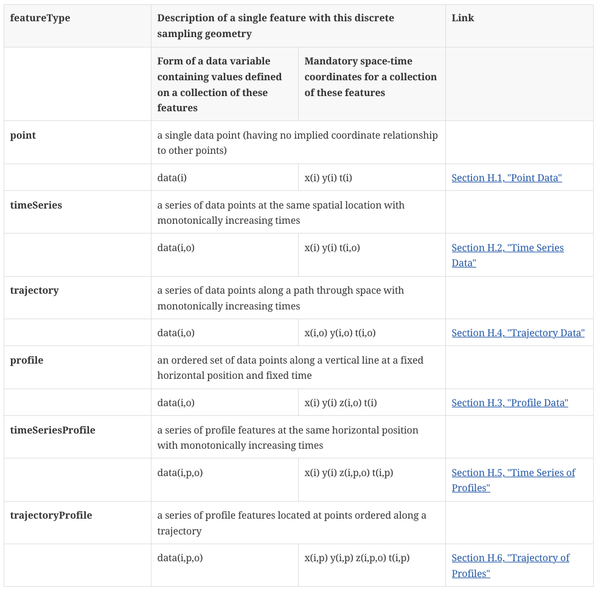

The CF Metadata Conventions#
1. What are the CF conventions?#
community standard for describing data in the earth system sciences
general concept Mostly used/intended for netcdf but also possible in other formats like XML
developed at University of Reading
2. Important features#
Variable Names#
Systematic identification via standard_name attribute
standard_names listed in
standard name table-> https://cfconventions.org/Data/cf-standard-names/current/build/cf-standard-name-table.htmlspecific names for different, e.g.
air_potential_temperatureandsea_water_potential_temperaturenew names can be suggested here: cf-convention/discuss
CF standard name ≠ netCDF variable name

Units#
all Variables must have units (except dimensionless numbers)
Units are strings following the
udunitsstandard
Time Coordinate#
the time unit must follow the form
"time_unit since reference_time"example:
double time(time) ;
time:units = "hours since 1990-1-1 0:0:0" ;
time:long_name = "time" ;
Coordinate Variables#
Scalar Coordinates#
-single-valued coordinates
Auxilliary Coordinates#
“alternative” sets of coordinates for dimensions
necessary if grid axes are not longitude and latitude, e.g. rotated pole or polar-stereographic grids
Cells and Bounds#
3. Types of measurement (or model) data#
Discrete sampling geometries#
Characterized by a dimensionality that is lower than that of the space-time region that is sampled
typically “paths” through space-time, e.g. time series or trajectories

Point data#
time series
profile data